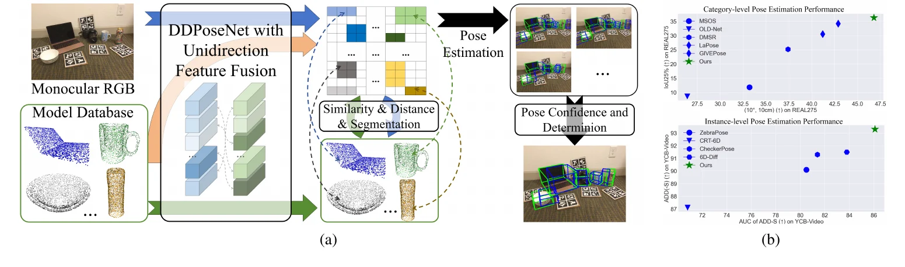

在投Under submission
Learning Dual-task Descriptors using Unidirectional Feature Fusion for RGB based Category-level Object Pose EstimationLearning Dual-task Descriptors using Unidirectional Feature Fusion for RGB based Category-level Object Pose Estimation
Neural Networks 投稿稿Manuscript submitted to Neural Networks
全文暂不公开。Full text is not publicly available.

研究概述Overview
DDPoseNet 面向仅 RGB 输入的类别级位姿与尺寸估计。方法学习图像像素和三维模型点的双任务描述子，通过单向特征融合让几何信息指导 RGB 分支；再依据候选模型的位姿置信度选择或融合估计。稿件报告了 REAL275、CAMERA25 和 YCB-Video 上的实验。DDPoseNet addresses RGB-only category-level pose and size estimation. It learns dual-task descriptors for image pixels and 3D model points, then uses unidirectional feature fusion to guide the RGB branch with geometric information. Pose confidence selects or fuses candidate model estimates. The manuscript reports experiments on REAL275, CAMERA25, and YCB-Video.
核心工作Key Contributions
- 学习图像与三维模型的双任务描述子，用几何先验增强 RGB 位姿估计。Learns dual-task descriptors for images and 3D models, using geometric priors to strengthen RGB pose estimation.
- 将分割与姿态估计纳入同一方法，并利用候选置信度整合结果。Combines segmentation and pose estimation, using candidate confidence to integrate predictions.